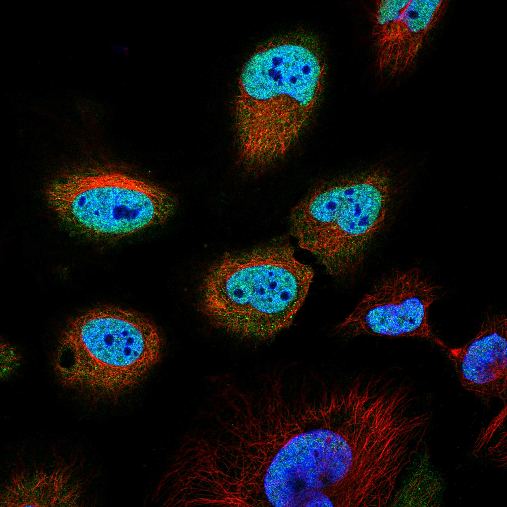
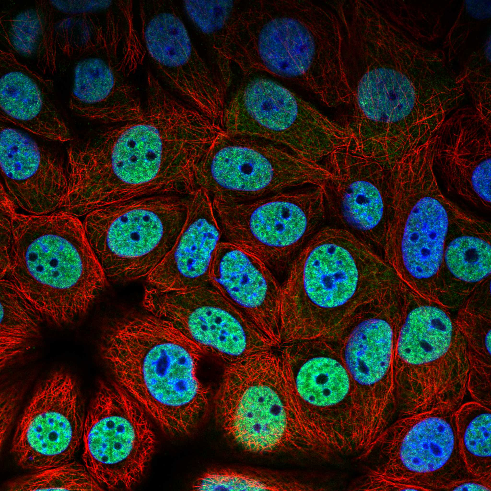
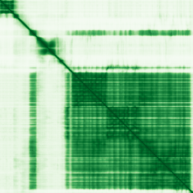

type: protein-evaluation gene: "DHX16" date: 2026-06-03 tags: [protein-scout, nuclear-protein, evaluation] status: scored ---
DHX16 核蛋白评估报告 (Full Re-evaluation)
1. 基本信息
| 项目 | 内容 |
|---|---|
| 基因名 / 别名 | DHX16 |
| 蛋白名称 | Pre-mRNA-splicing factor ATP-dependent RNA helicase DHX16 |
| 蛋白大小 | 1041 aa / 119.3 kDa |
| UniProt ID | O60231 |
| 评估日期 | 2026-06-03 |
IF 图像:  
2. 评分总览
| 维度 | 得分 | 满分 | 加权后 | 关键证据摘要 |
|---|---|---|---|---|
| 核定位特异性 | 7/10 | ×4 | 28 | HPA: Nucleoplasm; UniProt: Nucleus; Nucleus, nucleoplasm; Cytoplasm |
| 蛋白大小 | 8/10 | ×1 | 8 | 1041 aa / 119.3 kDa |
| 研究新颖性 | 8/10 | ×5 | 40 | PubMed strict=27 篇 (≤40→8) |
| 三维结构 | 7/10 | ×3 | 21 | AlphaFold v6 pLDDT=77.7; PDB: 无 |
| 调控结构域 | 6/10 | ×2 | 12 | 无注释结构域 |
| PPI 网络 | 3/10 | ×3 | 9 | STRING 25 partners; IntAct 30 interactions |
| 互证加分 | — | max +3 | 1.5 | PDB+AF+STRING+IntAct cross-validation |
| 原始总分 | 119.5/180 | |||
| 归一化总分 | 66.4/100 |
3. 详细分析
3.1 核定位证据
| 来源 | 定位 | 可信度 |
|---|---|---|
| Protein Atlas (IF) | Nucleoplasm | Supported |
| UniProt | Nucleus; Nucleus, nucleoplasm; Cytoplasm | Swiss-Prot/TrEMBL |
IF 图像获取: IF图像已下载并嵌入 (2张)
GO Cellular Component:
- 无 GO-CC 注释
结论: 主要核定位，HPA 可靠性良好，有辅助数据源支持。
3.2 蛋白大小评估
评价: 大小基本合适，可用于常规实验。
3.3 研究现状
| 指标 | 数值 |
|---|---|
| PubMed strict count | 27 |
| PubMed broad count | 31 |
| 别名(未计入scoring) |
关键文献: 1. DEAH-Box RNA Helicases in the Spliceosome: Advances in Structure and Function.. *FASEB J*. PMID: 41689426 2. Retinitis pigmentosa and sensorineural deafness associated with a de novo DHX16 mutation: case report.. *Front Genet*. PMID: 41555919 3. Severe Macular Atrophy in an Infant With Neuromuscular Oculoauditory Syndrome.. *Ophthalmic Surg Lasers Imaging Retina*. PMID: 41052356 4. DHX16-Associated Neuromuscular Oculoauditory Syndrome: A Novel Case.. *Am J Med Genet A*. PMID: 40326698 5. fmd/fmd2/DHX16-dsx cascade in sex determination of one Hemiptera species, Laodelphax striatellus.. *Insect Sci*. PMID: 40329630
评价: 非常新颖，仅有少数基础研究。
3.4 三维结构分析
| 指标 | 数值 |
|---|---|
| AlphaFold 版本 | v6 |
| AlphaFold 平均 pLDDT | 77.7 |
| 高置信度残基 (pLDDT>90) 占比 | 29.1% |
| 置信残基 (pLDDT 70-90) 占比 | 48.4% |
| 中等置信 (pLDDT 50-70) 占比 | 8.3% |
| 低置信 (pLDDT<50) 占比 | 14.2% |
| 有序区域 (pLDDT>70) 占比 | 77.5% |
| 可用 PDB 条目 | 无 |
PAE (Predicted Aligned Error): 
评价: AlphaFold 中等质量（pLDDT=77.7，有序区 77.5%），结构基本可用。
3.5 结构域分析
| 来源 | 结构域 |
|---|---|
| InterPro/Pfam | 无注释结构域 |
染色质调控潜力分析: 结构域注释有限，AlphaFold预测有可辨识折叠域。
3.6 PPI 网络
STRING 预测互作 (combined score >0.4):
| Partner | Combined Score | Experimental | 功能类别 |
|---|---|---|---|
| SF3B1 | 0.000 | 0.000 | — |
| EFTUD2 | 0.000 | 0.000 | — |
| GPKOW | 0.000 | 0.000 | — |
| PRPF8 | 0.000 | 0.000 | — |
| XAB2 | 0.000 | 0.000 | — |
| SNRNP200 | 0.000 | 0.000 | — |
| SF3B3 | 0.000 | 0.000 | — |
| SF3B2 | 0.000 | 0.000 | — |
| SF3A3 | 0.000 | 0.000 | — |
| RBMX2 | 0.000 | 0.000 | — |
实验验证互作 (IntAct):
| Partner | 方法 | PMID |
|---|---|---|
| uniprotkb:O60231 | psi-mi:"MI:0018"(two hybrid) | pubmed:- |
| uniprotkb:P38432 | psi-mi:"MI:0397"(two hybrid array) | pubmed:- |
| uniprotkb:P68400 | psi-mi:"MI:0424"(protein kinase assay) | pubmed:- |
| uniprotkb:Q5SQH4 | psi-mi:"MI:0007"(anti tag coimmunoprecipitation) | pubmed:psi-mi:"MI:1060"(spoke |
| uniprotkb:P51659 | psi-mi:"MI:0030"(cross-linking study) | pubmed:- |
| uniprotkb:P11388 | psi-mi:"MI:0030"(cross-linking study) | pubmed:- |
| uniprotkb:O60568 | psi-mi:"MI:0030"(cross-linking study) | pubmed:- |
| uniprotkb:P35659 | psi-mi:"MI:0030"(cross-linking study) | pubmed:- |
| uniprotkb:Q6PKC8 | psi-mi:"MI:0729"(luminescence based mammalian inte | pubmed:- |
| uniprotkb:Q6MG13 | psi-mi:"MI:0096"(pull down) | pubmed:psi-mi:"MI:1060"(spoke |
PPI 互证分析:
- STRING + IntAct 均有数据
- STRING partners: 25，IntAct interactions: 30
- 调控相关比例: 0 / 20 = 0%
评价: STRING 25 个预测互作，IntAct 30 个实验互作。调控相关配体占比 0%。
3.7 多库互证
| 维度 | 来源 | 结果 | 是否一致 |
|---|---|---|---|
| 三维结构 | AlphaFold pLDDT=77.7 + PDB: 无 | pLDDT=77.7, v6 | 仅预测 |
| 定位 | UniProt + HPA | Nucleus; Nucleus, nucleoplasm; Cytoplasm / Nucleoplasm | 一致 |
| PPI | STRING + IntAct | 25 + 30 interactions | 数据充分 |
互证加分明细:
- 多库定位一致 (2源): +0.5
- STRING + IntAct 双源验证: +0.5
- 结构域 + AlphaFold 质量: +0.5
- PDB 多条目覆盖: +0
总分: +1.5 / max +3
4. 总体评价
推荐等级: ⭐⭐⭐
核心优势: 1. DHX16 — Pre-mRNA-splicing factor ATP-dependent RNA helicase DHX16，非常新颖，仅有少数基础研究。 2. 蛋白大小1041 aa，大小基本合适，可用于常规实验。
风险/不确定性: 1. PubMed 27 篇，已有一定研究基础 2. 结构数据质量可接受
下一步建议:
- [ ] 查阅最新关键文献补充研究背景
- [ ] 获取 Protein Atlas IF 图像确认亚细胞定位
- [ ] 设计体外实验验证核定位及潜在调控功能
5. 数据来源
- UniProt: https://www.uniprot.org/uniprotkb/O60231
- Protein Atlas: https://www.proteinatlas.org/ENSG00000204560-DHX16/subcellular
- PubMed: https://pubmed.ncbi.nlm.nih.gov/?term=DHX16
- AlphaFold: https://alphafold.ebi.ac.uk/entry/O60231
- STRING: https://string-db.org/network/9606.ENSP00000
- Data fetched live: 2026-06-03
<!-- DOMAIN_HUMANPPI_REPAIR_START -->
Domain/SMART 与 humanPPI 补充（2026-06-07）
SMART / UniProt domain
| Source | Data | ||
|---|---|---|---|
| UniProt | O60231 | ||
| SMART | SM00487;SM00847;SM00490; | ||
| UniProt Domain [FT] | DOMAIN 409..573; /note="Helicase ATP-binding"; /evidence="ECO:0000255\ | PROSITE-ProRule:PRU00541"; DOMAIN 598..771; /note="Helicase C-terminal"; /evidence="ECO:0000255\ | PROSITE-ProRule:PRU00542" |
| InterPro | IPR011709;IPR011545;IPR002464;IPR048333;IPR007502;IPR014001;IPR001650;IPR027417; | ||
| Pfam | PF00270;PF21010;PF00271;PF07717;PF04408; |
humanPPI / HPA Interaction
Source: https://www.proteinatlas.org/ENSG00000204560-DHX16/interaction
| Partner | Datasets | AF3/HPA structure |
|---|---|---|
| DHX38 | Intact, Biogrid | true |
| GPKOW | Intact, Biogrid, Bioplex | true |
| SF3B2 | Intact, Biogrid | true |
| XAB2 | Intact, Biogrid | true |
| AJUBA | Bioplex | false |
| AKIRIN2 | Bioplex | false |
| ANLN | Biogrid | false |
| AP3M1 | Bioplex | false |
<!-- DOMAIN_HUMANPPI_REPAIR_END -->